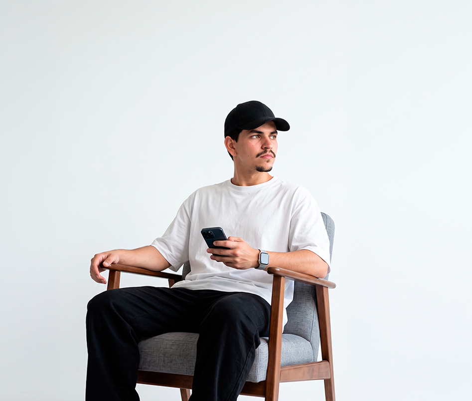
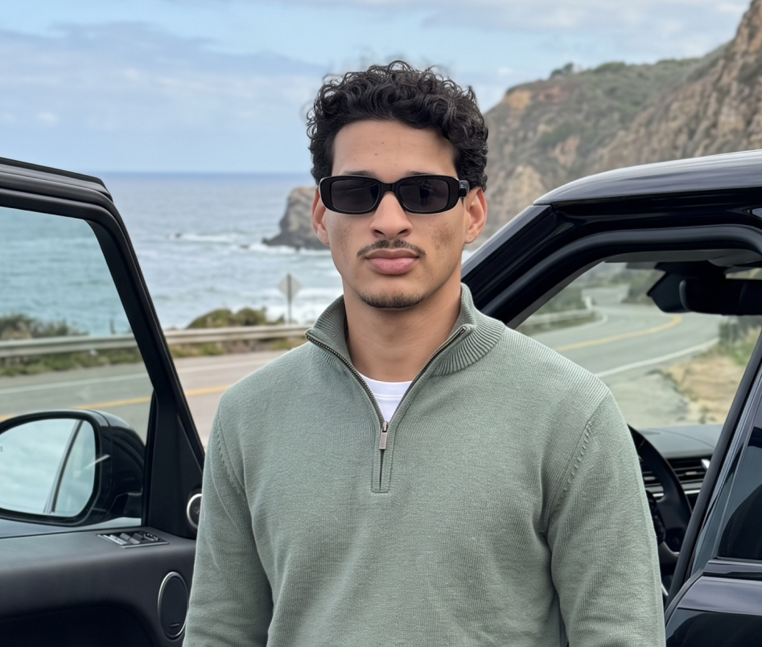

Performance
A mensagem certa encontra as pessoas certas. Planejamento, mídia e análise para gerar oportunidades reais.
- Tráfego pago & aquisição
- Google Ads & Meta Ads
- Otimização de campanhas
Conectamos estratégia, design e tecnologia
para transformar presença em crescimento.
Uma marca forte, uma experiência digital bem construída e mídia com direção. A Oriz conecta essas frentes em uma estrutura que faz sentido para o seu negócio.
Três frentes.
Uma mesma direção.
A mensagem certa encontra as pessoas certas. Planejamento, mídia e análise para gerar oportunidades reais.
A base para cada próximo passo. Experiências digitais que conectam sua marca, seu público e seus dados.
Clareza para ocupar seu lugar. Estratégia e expressão visual para construir uma presença reconhecível.
Entramos no contexto do negócio, do mercado e das pessoas. Definimos prioridades e uma direção clara antes de escolher canais ou formatos.
Partimos dos seus objetivos. A escolha dos canais vem depois de entender o que precisa acontecer.
A expressão da marca e a experiência digital nascem conectadas à estratégia e à execução.
Mais clareza sobre o que funciona, o que precisa mudar e onde concentrar os próximos esforços.
Uma estrutura que aprende a cada ciclo e evolui junto com os desafios da sua empresa.
A Oriz Marketing conecta estratégia, criatividade e tecnologia para construir marcas e estruturas digitais.
Acreditamos em proximidade para entender, clareza para decidir e consistência para executar. É assim que transformamos diferentes especialidades em uma mesma direção.

ORIZ · PESSOASESTRATÉGIA SE FAZ COM PESSOASEudes Araújo atua há nove anos nas áreas de design e construção de marcas. Ao longo de sua trajetória, participou de projetos para empresas como Coca-Cola, Fixanet, Aposto, Esporte da Sorte e Fila, entre outras. A experiência em diferentes mercados consolidou uma visão estratégica sobre branding: marcas relevantes são construídas com coerência, consistência e presença contínua em cada ponto de contato.

ORIZ · PESSOASDIFERENTES OLHARES. UMA DIREÇÃO.Wallyson Dias conduz as frentes de tráfego e estratégia da Oriz. Graduando em Direito, desenvolve um olhar especialmente atento ao mercado jurídico e ao contexto empresarial, conectando comunicação, aquisição e visão de negócio para identificar soluções que vão além da presença digital.
Começa com uma conversa.
Onde sua marca está e aonde quer chegar?